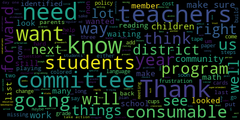
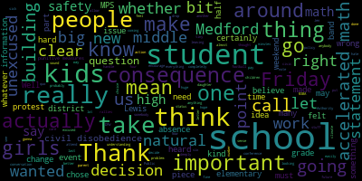
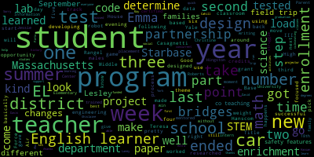

AI-generated transcript of Medford School Committee meeting September 23, 2019
English | español | português | 中国人 | kreyol ayisyen | tiếng việt | ខ្មែរ | русский | عربي | 한국인
Back to all transcripts
[SPEAKER_08]: States of America and to the Republic for which it stands one nation under God indivisible with liberty and justice for all.
[Burke]: Thank you. Approval of the minutes of September 9th, 2019. Motion for approval by Ms. Vandekloot, seconded by Ms. Kreatz. All those in favor? Aye. All those opposed? Motion passes. Approval of bills, transfer of funds, and approval of payrolls. Motion to approve by Miss Kress seconded by Mr.. Russo roll call vote, please Yes, six in the affirmative one absent motion passes report of the secretary none Is there a motion for suspension miss must own? motion for suspension to take papers to the Three and 10, out of order. Please mark Mr. Benedetto as present. Item two, recognition of Joseph Farafa contributions to the event Horizon Telescope Project. Mr. Cieri is in the audience. Let's see my card.
[Cieri]: Good evening, everyone. I'd like to bring up Joseph as I talk about his accomplishments. We've known Joseph for quite a number of years. He's a 2017 graduate of Medford High School, attended the McGlynn Middle School and the Brooks. All right, see, I got my facts right. And he, this past year, participated, or for a couple of years, has participated in the Event Horizon Telescope work, which was involved in looking at the black hole. And this was pretty secret for a long while because there was a lot that we didn't know. And then in, I want to say in April, Of last year, the team released their data and showed us the picture. And they released six papers, six research papers with 347 members on the six papers. Joseph is the only undergraduate named on all six papers, so I got my facts correct on that. And he also contributed to, I think, three directly, and then had another, had one of the conferences that they were talking about the data that you had worked pretty hard on. So at this point, we recognize Joseph because it has, the discovery, along with the other 346 researchers, has received a Breakthrough Prize, which, carries more money than the Nobel, and it's the USA Nobel Prize, in my opinion. So it's a really great honor for Medford to have one of its own so young to be part of that particular research project and contribute to it in such a meaningful way. I want to congratulate him personally. He's a wonderful human being, a true Mustang, And this is the kind of thing we love to see from our graduates, but also from the current students that we have. He's done a great job. So congratulations, Joseph.
[Burke]: If I could formally read the report into the record. Medford High School alumnus of the class of 2017, Joseph Arai, is being recognized with the Science Breakthrough Prize, along with the 346 collaborators of the Event Horizon Telescope's incredible first picture of a black hole. The team is equally splitting the award among all collaborators. He is named on all six of the publications for the discovery. Joseph is the only undergraduate student named as an author. Unbelievable. Amazing. Thank you.
[Cieri]: I should also add, he also goes to UMass Boston. So this is a really important kind of pipeline that I think our UMass system is developing for our students. So just all of these things from a public education perspective are so critical for the future of our country. So hopefully this bodes well for the future of everything that's going on.
[Burke]: Joseph, could you step forward? Mr. Cieri, please feel free to join. Medford Public Schools is proud to recognize Joseph Hurrah for scientific contributions to the Event Horizon Telescope project. On behalf of all the members of the Medford School Committee, congratulations. Would you like to say something? You can stand tall. It'll catch you.
[Farah]: My mom said I was going to be expected to say something. I didn't believe her. Moms are always right. Yeah. I'd like to thank all the, especially the science department at Medford High, and all the teachers I've had throughout the years. They just supported me without question throughout everything. And everyone in Medford deserves as much credit for the award as I do. So thank you, everyone.
[Burke]: Mr. Ruggiero?
[Ruggiero]: Yes. Thank you, Joseph. Let me shake your hand.
[Burke]: Congratulations.
[Farah]: Thank you so much. Congratulations.
[Ruggiero]: Thank you very much, Mayor Burke. I just wanted to say that when I originally saw the images online and I read about them in ScienceDaily.com when I first saw them, I was just blown away by the images. And it's just really exciting for me to know that our hometown made a little contribution to that moving forward. I'd just like to know, Joseph, can I ask you a couple of questions? Yeah, sure. Yeah, I'd just love to know, what in particular was your contribution to the project?
[Farah]: So I contributed to three aspects of the project, imaging, modeling, and theory. So imaging deals with taking the data, the raw data, and turning it into the image that you saw. And on that end, I was on imaging team one. I ran the imaging workshop where we created the first image. and I created the comparison metrics that we used for the blind imaging algorithms. For the modeling aspect, modeling is how we extract actual information about the black hole from the image, I designed ring image domain feature extraction methods that basically look at the image and in a non-biased manner can determine not just how large the ring is in its width, but its uncertainty in that measurement, and from that the mass of the black hole. And on the theory end, I work on extending Einstein's theory of relativity, specifically the Kerr metric, to come up with an alternate parameterization of the black hole shadow, which is how we determine everything we know about the black hole.
[Ruggiero]: That's amazing.
[Farah]: Thank you.
[Ruggiero]: Absolutely amazing. Thank you. Can you just help us understand why this is so special and why it's so difficult for, why this discovery hasn't been made before?
[Farah]: Of course. So Einstein's theory of general relativity and the theory of quantum mechanics are the two most successful theories in physics and they're used to describe everything that we understand today from the very, very small to the very, very large. But they have a flaw, which is that they don't work when the thing that you're looking at is both very, very small and very, very large. And the only place we know where that happens is in a black hole past the event horizon. And up until the image was released, there was no scientific evidence that black holes even existed and that this flaw was actually a real thing. And so with the advent of the image came the first evidence of an event horizon in the universe, a place where our understanding of physics breaks down.
[Ruggiero]: And can you tell us the location, how many light years away it is?
[Farah]: Yeah, so M87 is an elliptical galaxy 55 million light years away from us. The light from the black hole travels 50,000 light years to escape the galaxy, then 50 million light years to us, and then another 100,000 or so to reach our portion of the Milky Way. And then it had to survive, you know, 15, 16 miles of atmosphere, significant atmosphere, like the water column, to actually reach our telescopes. So it's an amazing, it's a basic piece of luck that any of the light made it to us at all.
[Ruggiero]: That's absolutely amazing. For someone who's not prepared to speak, you certainly do know the topic very well. It's very clear. I would like, I'm sure this invitation is already being extended. The discovery was extraordinarily, I mean, was inspirational to me, and I'm sure a number of our other students would love to see your work and see some pictures. I imagine a number of science students were very excited about black holes. I've never actually seen them, because my son's first word was actually black hole, because I subjected him to all the videos. I think that there are a lot of students that would be really inspired by what you've done. Thank you so much for what. I really appreciate it. Thank you all.
[Van der Kloot]: As I said to Joseph coming in, it's such an honor to know him. And it was. It's nothing new. We're so excited over the years watching you grow and your family. And thank you to the FARA parents as well, who have been so supportive, of course, of their kids. It's been so great. And, you know, this is one of those moments, I think, that when I live a very long and healthy life, I'm going to say, I knew him when. And it's just great. So thank you so much, Joseph.
[Burke]: Ms. DiBenedetto.
[DiBenedetto]: Thank you. Um, Joan, Joseph and I know each other very well. His older sister was also a scientist and did many activities with my daughter. So I saw him as a very young child and he always had this interest in science, and whatever he put his mind to, whether it was playing his instruments, or for Medford High School Orchestra, or following the girls around to the Broad when they did their internship there, I knew he was going to set off and do wonderful things. I just thought it would take a little longer, Joseph, to be honest. So if this is the beginning, I can't wait to see what's next. I'm very proud of you, for yourself, and for MedFed, and for all the teachers that have helped you along the way. And mostly because I know the two parents in this room are very similar to myself and my husband, and they're beaming with joy to see you here getting another award. Because this isn't your first year, and I don't think it will be your last. Welcome back to MEDFED. So thanks for coming back to see us and keep coming back.
[Farah]: Thank you.
[DiBenedetto]: Thank you.
[Burke]: Next up, in recognition of outstanding contributions to the City of Medford, Ron Morin, Executive Director of Friends of the Middlesex Fells Reservation. The City of Medford is grateful to Mr. Ron Morin for his unfailing commitment to the preservation of the Middlesex Fells Reservation and for his immense contribution to the effort to protect against the development of the 90-millimeter meadow, a 13-acre section of Lawrence Woods for future generations. The Medford School Committee recognizes Mr. Moran's outstanding leadership as the executive director of the Friends of the Fells Reservation. By his own example, Ron demonstrates how to enjoy and protect our natural resources and in turn our quality of life. Through his generosity of time and spirit given to the citizens of Medford and the visitors of the Middlesex Fells Reservation, Ron teaches us to value and protect those resources which sustain and inspire us. Mr. Moran, He's the outgoing chair. And so we didn't want this moment to go by without paying a tribute to you, because you were so instrumental in protecting the 90 millimeter site, which for those of us in Medford realize it could have been a hockey rink had others had their way. So I wanted to personally thank you, and I know that it's so important. We have all of the Fells walks that our science classes go to, and I'm sure Mr. Farrar had gone down a couple of those paths as well. So it is a living laboratory that we appreciate and respect, and we know you do as well. So in recognition of your outstanding service to the City of Medford, as Executive Director of the Friends of the Middlesex Fells Reservation, Ron Morin presented this day.
[Buxbaum]: Thank you.
[Morin]: I just want to say that I don't think I could have done it without the mayor, actually. We organized the community, but I have to say the city of Medford really got behind us. In the signatures that we raised, the petition that we had signed, over 1,000 people from Medford signed that signature. That was very, very significant. Of all the communities around here, Medford was number one. When Mayor Burke and Stephanie Burke got behind us, that really was a tipping point in our battle with DCR. And her authority in this was really what moved, I think, the commissioner to move in our direction. So thank you for the award. I didn't do it alone, though. I had a lot of really good people helping me.
[Burke]: Very good. Thank you. Jeff, would you like to say a few words? It's up to you.
[Buxbaum]: Since you asked.
[Burke]: Name and address, please, for our record.
[Buxbaum]: Jeff Buxbaum, 31 Hillcroft Park, Medford. Ron joined us a couple of years ago as an interim director to help us through a transition that we were going through. And he stayed on for an extra year permanently until he decided to retire again. But when the 90-millimeter Meadow fight came up, he just sort of got energized. I mean, he was great to begin with, but really he was just ready for that fight and really helped mobilize all the communities, you know, got all the different people on board. And so that was probably the biggest contribution, and we really appreciate him for that and everything else he did for us.
[Burke]: Thank you for everything you do as well, Jack. Thank you. Also, while we're under suspension, report on climate strike communication, Dr. Cushing.
[Cushing]: Good evening members of the committee and members of the public. So as many of you know Greta Thunberg is a 16 year old Swedish activist who last year as a 15 year old stood outside with a poster board that translated into English strike for climate. And this has moved into a worldwide movement and she is the world's newest climate warrior. And she asked for students across the world to participate in acts of civil disobedience this past Friday. and to participate in climate strikes, to walk out of class, and to participate in rallies. Boston was one of many places around the world that held such rallies. She has made such quotes that I've shared in the document provided to you. that the one thing we need more than hope is action. Once we act, hope is everywhere. So instead of looking for hope, look for action. Then and only then will hope come. And then Thunberg also said to the House of Representatives just last week, action does not require the permission of an excused absence, sorry, those are my words. If there is anything I can do to improve the situation, then I think it's a very small price to pay. When we were meeting and discussing the, conversation really focused around civil disobedience and giving students the opportunity to have that voice, but not excusing absences. The reality is, is that climate change, 97% of scientists agree, yet only approximately 50% of the population agrees with. I believe that we all stand on the side of science and we were looking for and hoping that students would make the sacrifice necessary. that whatever an unexcused absence may carry with it, that students would realize that, as she said today to the United Nations, now is the time for panic, all right? And given those types of things, we hope that students approach us, their leaders, their teachers, myself, their principals, whoever, to address these issues. We did not look at this climate change strike as an issue of climate change. But if we approved unexcused absences for this, then every rally, be it for good and noble reasons, or be it for the ignoble, nefarious, and detestable reasons that may go directly against the core values of Medford and Medford Public Schools, we would then be beholden to excuse absences for. And that's one of the main reasons why we stuck with our position of not excusing absences. Because when hate shows up at our doorstep, we would be beholden to excuse absences. There is no denying Climate change. As people in the Bahamas are searching for their loved ones, as Hurricane Katrina in New Orleans is still a memory that is still raw and real for many Americans, Harvey, name the storms, Maria, that devastated our brothers and sisters in Puerto Rico. But as Greta Thunberg said, action is needed. And we call upon our students to do that without an excused absence. This is bigger than excused absence. And our concern was the next time that hate shows up at our doorstep. And we have to excuse absences for things that are detestable and that may go against our core values.
[Burke]: Thank you, Dr. Cushing. Mr. Russo.
[Ruseau]: Thank you very much for that. I want to start at the end a bit. Is there any national conversation around hate rallies that students are leaving school for? Because this is completely new to me and sounds a bit like backing into a decision that was made. Like, I've not heard of any of these hate rallies coming up anywhere in our country. Do you think they would make the news?
[Cushing]: So a few weeks ago in Boston, there was a rally. There was a march that stood contrary to the beliefs of many people in this country in West Virginia two years ago. There was a hate march that left one dead and several injured when somebody decided to drive their car into a crowd. And so that was the light in which we looked at this. The reality is that we have to be concerned about our students' safety for the lowest common denominator and for the things that may be unthinkable. And trust me, we believe climate change is real and that the realities of a changing world and a changing planet are upon us.
[Ruseau]: If you call in sick on a Friday, does Medford Public Schools have a policy that tells you what you can and cannot do on Saturday and Sunday?
[Cushing]: So if I were to call in sick on Friday, I'd better be sick because otherwise it would be an abusive sick time. For whatever reason you don't show up. For personal time I would say that Medford Public Schools does not have a policy but I'm not 100% familiar with our policies at this point.
[Ruseau]: No I'm talking about anybody who works for our district. I know for my own job if I call in because I need a mental health day or I'm just, you know, for whatever reason I decide not to go to work, my employer has no rules about what I'm allowed to do on the weekend after that Friday. So I just wanted to be clear. I think there was some confusion with some people I've talked to. I actually have no issue with whether this is an excused or unexcused. I believe the administration should make that decision. I do believe it should be the policy of the Medford Public Schools that we do not take and then provide punitive measures that extend outside of the school hours. to our students. There is not some huge problem based on our absences that we have reported to DESE. We are perfectly fine. We are in the regular range of nine and a half. And we do not have a problem of kids skipping school who are then wanting to go, like the band kids are all going to school. And so are the football kids. And the natural, when I was an elementary school parent, there was this huge emphasis on natural consequences. The natural consequence, if you don't go to work, you don't get paid or you use your sick time. The natural consequence, if you don't go to school and it's unexcused, if the teacher doesn't let you make up the test, then you don't get a grade. But it's an unnatural consequence to then penalize those students that participate in extracurriculars, whether it's football or band, to then take away those things from all of their teammates. To me, it is actually abusive to have the pressure that these students were put on on Friday morning and told, you're going to ruin this band performance for all of Medford. Now, I don't think that the person who put that message out did anything wrong. The wrong thing was that they actually would be penalized for that. And if I may, I have a letter from a parent that couldn't make it. May I read it? Certainly. So this is from Jen Lewis. And unfortunately, I don't have her address right here, but I'll get that. Dear School Committee, I am deeply disappointed at MPS's decision to maintain last Friday as an unexcused absence. My daughter, Laura Lewis, 10th grade MHS, is a Color Guard member, and while she cares deeply about climate change and would have liked to go to the march on Friday, she chose to attend school since to get an unexcused absence would have kept her from being part of the annual home show this weekend. As some of you may be aware, it is their largest event of the year, and the kids were strongly admonished not to let the ban down. MPS could easily have paved the way for more students to attend by keeping them from having to choose between speaking out with hundreds of thousands of people around the world versus abandoning your team when you have all worked hard for a big event since June. Many of our surrounding districts chose to allow students to protest at this event without punitive measures, and MPS could have done the same. Instead, knowing the effect it would have on students who were part of weekend activities, You chose to allow a state data point to take precedence over encouraging civic participation and free thought among our student body. Climate change continues to worsen because our government refuses to take action to change it. Maintaining the status quo, not rocking the boat, has gotten us where we are. We must speak out, we must protest, and we must encourage and support our children to do the same. Your choice did the exact opposite. Attending a big protest engenders a sense of camaraderie and hope that simply cannot be easily replicated. I am proud of my daughter for the choice she made, ashamed of the school that forced her to do so, and saddened that she missed the opportunity to be there. I implore you in the future to find ways that the school can encourage students in activism and civic engagement not to, not be another barrier supporting the status quo. And that was signed by Jen Lewis. So I mean, I just feel like there was a middle ground here. And the assertion that, I mean, let's be clear. The statement I just heard implies that Cambridge, Boston, Somerville, Arlington, and many other towns did not take into account the student safety. That is a statement that is a direct, can be followed directly from the statement that this was about their safety, which is in the letter that we received. I don't believe that those superintendents and those districts truly don't care about the safety of their students and decided to do something they felt was going to risk their students' safety. But as I said before, I'm not opposed to just leaving This to me is not about whether it's excused or not. It's about whether the punitive measures are appropriate. I'll let somebody else talk for a little bit.
[Burke]: Thank you. Ms. Van der Kloot.
[Van der Kloot]: Thank you. So I thought about this a lot, and because I was disappointed that students who really would have liked to have gone to the March didn't go because they would have adversely affected their team because they're not allowed to take part in those activities. But to me, while there was a question of timing, it happened quickly. We only knew about it, or I only knew about it the day before. To me, this is a school committee policy question. And to me, I feel like the administrative people probably are doing their job. And now I have to step in and say, this is a policy question. I think we need to look at the policy. I don't think that students should be penalized for attending a climate change march. I'd love it to be an educational opportunity. I would even consider some sort of, I mean, I agree with Paul that that distinction between excused and unexcused, perhaps we need to talk about that overall because I've had parents come to me with frustration about that policy in the bigger sense. Because they say, you know, my kid was sick, but not so sick that they needed to go to the doctor. So I just put aside over to the left and say, we have a bigger question. But I do believe it's a policy. So I'd like to make a motion that the school committee meet to discuss the absentee policy, especially in regards to outside events. that students would like to participate in. I think that if we can sit down around the table and come to a better way to handle this, that this would be better for our students, and then we wouldn't be putting our administrators, you know, holding them up with annoyance. So, if I could.
[Burke]: So moved. Is there a second on the motion? Seconded by Mr. Russo. Thank you, Ms. van de Kloot. Ms. Kreatz.
[Kreatz]: Oh, yes. So I was thinking, I heard from Mr. Russo and Ms. Van der Kloot, and so I was wondering, I was thinking that in the future, if we knew early enough, could we plan like a civic field trip where maybe one of the teachers could go along with the students and go into town with parent permission to go into the strike or, you know, the protest with adult supervision and as long as they had their parental permissions.
[Cushing]: So I would say the answer to that should be yes. Mr. Russo made me aware of the climate strike about 10 days beforehand based on email. I then went to our nursing staff and other members of our high school to see if we could make that happen. That turnaround time was pretty tight, given where forms may or may not be at the start of the year, kids getting things back, those types of things. But I would say most definitely that, but The other thing, too, to think about here is also we need to find a way to engender student leadership on these issues. That's what Greta, if I can be so bold as to use her first name, that's what Greta is really talking about. I watched her speech today and she was basically holding back tears of anger as she said, how dare you to the United Nations, calling on her peer group and the adults as well to stand up and to start doing these types of things. And so I encourage students to come to me or to go to their principal. Let's find a way to make these things a reality. Let's find a way to make us more green so that we are actually taking action and that we move beyond conversation. But I agree with you that yes, we can definitely work to make that happen.
[Kreatz]: And do you know how many students do we know if any students attended the strike that day? Another parent had asked me, she said, do you know how many students? Or we don't know.
[Cushing]: Our attendance was off about a percentage point. I believe our average daily attendance prior to that day was about 97%. On that day, I looked it up with Mr. DeLeva, and our attendance was at about 95.8, I believe. But I might be off on the point.
[Kreatz]: And do you know if during the day were there discussions maybe at, you know, at civic class or history class to just talk about the climate strike with the students? I was just, I also received that question from parents, like did they actually engage in discussion?
[Cushing]: So we have sent out resources to teachers to do that. I have heard from teachers that yes, that discussion was there. Um, I have, uh, heard from teachers that I've heard from, um, the principal that there was, I have not heard from teachers. I've heard from, uh, the principal that there was robust discussion, um, that students were actually, um, seeing the policy as seeing our stance on it as well. This is an opportunity for civil disobedience. And this is a moment to do such a thing. And I also remember a quote on Friday itself of a Brookline student who talked about walking out at the 1045 bell, I think it was. The quote is in the Boston Globe, 14-year-old student by the name of Jordan, who talked about understanding that there were consequences for walking out. We did not consequence kids in that sense of whatever they might do. But what we did, what he said was, or she, I forget, honestly, but the comment was that the consequence to not act is too much. And so had students done that, I think that teachers would have been supportive, teachers were supportive. I know based on what the principals have told me that there were conversations had and that the humanities classes really led that. Other resources have been provided to teachers throughout this week and climate change week does go through Friday as well.
[Kreatz]: And I just had one more, because I know, I think it was last year, where there was a walk-in, where the students didn't actually walk out, but they were allowed to walk into the gymnasium or the cafeteria for about 10 to 15 minutes. It was like a safe walk, where they could do that. That was another idea that we could do if the students still wanted to have a strike, they could do it within the school at a certain time. But that was just a suggestion. Thank you.
[Burke]: Mr. Ruggiero.
[Ruggiero]: Thank you. Thank you for the paper. I have a couple of questions about excused absences. Let's assume for a moment we had a child with extraordinary abilities, perhaps they were like a chess master at a very young age, and they had a tournament to attend and it conflicted with school hours. Would that student be able to receive an excused absence to attend a tournament?
[Cushing]: Not having the policy directly in front of me. I really can't speak to it. If I had the policy in front of me and could speak to it, I would be happy to.
[Ruggiero]: But I assume the administration wouldn't penalize a child.
[Cushing]: So it's interesting because that's, generally speaking, that's a non-school event. All right, so I'm going to speak in generalities here, having been a principal before and vice principal. So generally speaking, that would be not considered an excused absence. You know, the faculty and staff working with would probably see that as an opportunity to provide that student opportunities to make up the work and to not hold that harm. against them when it comes to sports and after school activities. Generally speaking, though, that might be something that requires a principal's dispensation. So most attendance policies are written with the ability of the principal to give a dispensation for some special reason. So let's say, hypothetically, the student is out for more than half a day, that the principal gives their blessing to allow them to participate in after school activities. Not just sports, not just band, but anything.
[Ruggiero]: Right, right. I'm slightly disappointed by the stance our schools took for a couple of reasons. While I certainly understand member Van der Kloot's thought that we need to review the policy and change the policy and perhaps the direction that we should move forward. The whole point of this walkout is to draw attention to the fact that adults aren't solving this problem. And the fact of the matter is that by not sort of excusing these absences, we're actually providing almost proof to that. Look, it's more important for you to go practice with your color than deal with the fact that the oceans might rise by a couple of feet in a couple of years. That is, I think, ultimately what disappoints me the most about the school's proposition. I mean, to sort of echo what member Ruseau mentioned, we would not excuse students to attend a hate rally. Right? I mean, that's, that, no, it's not the question, just like a child who is a chess prodigy, we'd all get together and say, you know, this kid's doing well in school, we'll make sure they make up their material, or a child that's going to Spain, perhaps, we'll make sure that they make up their material, they won't miss any schoolwork, and we'll give them excused absences. That position could have been taken here. And I guess that's what I find There is wiggle, I mean, once again, we don't have the policy at hand. But we as a community, as a country and a world, have to recognize that there are things that are more important than words written on paper. And we need to, if we have the capacity to, just like I'm sure in Boston, they don't have a only climate activism is excused. And just sort of one last point in this regard. I also think it's a little, I don't necessarily know whether teachers should be there. I mean part of the idea of this walkout is for students to express their anger and frustration about what we as adults are doing. You know and we all share responsibility in what's happening in our world right now. So I think that these are important things to keep in mind. In terms of the excused absence, I think we can call it what we like. We should not penalize these students. We should excuse these absences. People should not be made to feel like, oh, I have to choose between my world or a bunch of kids I play football with that I really love. That's not a fair choice.
[Burke]: Thank you. Ms. Mustone.
[Mustone]: Thank you. I was going to ask if Member Van der Kloot would amend her motion to send it to the policy subcommittee. Great. Could I make?
[Burke]: Yes. Policy subcommittee. Can you accept the amendment? Sure. Member? Thank you. Can we go along that motion? We will as soon as Mr. Russo has one more.
[Ruseau]: I won't make all night.
[Burke]: Mr. Russo?
[Ruseau]: Thank you. This was a conversation I've had several times over the last week, even before the strike, about the idea that this is civil disobedience. It certainly is civil disobedience. But here's my issue with giving children the same consequences that the rest of us in this room would have, they do not have the same rights as us. They don't. The Supreme Court's crystal clear. So why should they suffer the same consequences as us when they take an action such as civil disobedience? I just think that those, I kind of have trouble getting from the, you do civil disobedience, you get the consequences, whatever they are. That's fine, I'm a grown up and I can, make that decision. But when I don't have all the same, if somebody doesn't have all the same rights, I just don't think that is a fair proposition. And that is, I think, everything I wanted to say.
[Nowogrodzki]: Yes, we have a member of the public that would like to speak your name and address please yes, I'm on Anna Nowogrodzki I live at 20 Pleasant Street in Medford I'm a Medford parent and I'm here representing my husband and myself my husband took our two-year-old out because he's a two-year-old and And my friend Carrie Thorderson as well, who also lives in Medford. And I'm disappointed with the school's handling of this, as various points have been made already. I think that firstly, allowing students to miss school without punishment for the climate strike would absolutely not make you beholden to excuse them for other absences. you are the administration, you have the authority to excuse what you like and not excuse what you don't choose to excuse. So that argument does not seem to make any logical sense to me. And in addition, That argument would be saying that Somerville, Arlington, and Cambridge and Boston Public Schools would all be planning to excuse their children to attend hate rallies in the future, which is clearly not true. So, I think that... There's a logical fallacy, as well as what Paul mentioned, that children don't have the same rights as adults. Children can't vote. Children don't have the power to collective bargaining. There are many things that adults have that children don't. there's a fallacy that students need to defy your school administration in order for their protest to be meaningful, while I think that students defying global leaders, the US government, and the entire UN is meaningful enough and is a huge enough deck to have stacked against them that they don't need to also have your policies stacked against them. Finally, I would say that when people of any kind work for justice, obstacles are always going to stand in their way, but I think we are beholden to them not to be those obstacles and to treat those obstacles as if we have no power over them when we are in fact making them is irresponsible and disingenuous. I think that is especially true of our own children and the children of our community in Medford.
[Burke]: Thank you very much. Thank you. Ms. Van der Kloot.
[Van der Kloot]: I just want to be clear that by asking to send this to the policy committee, it's not because in any way that I agree with it. I didn't agree with the choice. It's just because I'm taking the power that we have as school committee members, and that is to make and set policy. And I think that's the way that we can go about it and craft what we will agree on. I also just want to mention in all of this, the one thing that I kept on thinking about was that lovely young lady that came to us last spring, wanting to bring to our attention her frustration with the styrofoam trays. And I think now it's September, and I know we're working on it, but yet it doesn't feel like we're really concerned enough, because if we're concerned enough, then price wouldn't be a matter, and we would get reusable trays. I was at Tufts yesterday, at the Tufts Community Day, and I noticed all the plates were, they're recycled paper. And so I'm concerned that our own body isn't feeling the pressure enough, that we're gonna get to it, but we're not getting to it fast enough. And I think that it's up to us when we have a student like this, and we all agreed, we all agreed what we should do, that we should make it happen, not wait until it happens.
[Burke]: Thank you, Ms. Vandekloot. Mr. Rochero.
[Ruggiero]: I support where member Van der Kloot is going with this. I'd like to offer a friendly suggestion or two amendment. I would like to excuse the 1% of students right now that did not attend school on that day. The 1% that you said there was a dip. I would like to excuse all students that did not attend school that day. I think that makes more sense than, if we're going to start actually beginning to take action on what's happening on climate, I think then we have to recognize in talking about policy, about which students need to be excused when, I don't necessarily think that, that addresses the issue to the spirit of what the students are trying to protest. And I would like to stand behind them in any way possible, and this is the way I think we can do it.
[Van der Kloot]: It may be trickier than you think because the excused and unexcused, I mean, I'm not sure that matters as much as, and I don't think we can go back and unfortunately change the fact that the real issue was they couldn't participate in their extracurriculars if they went. And that's what is at the real meat of this, is that that's what the problem was. I'm not certain. So just as I try to think about this and I may need some help from the administration here of saying we could ask students if they went to the climate change on Friday, I guess that's how we would identify who went as opposed to who was sick or who was whatever. I'm not quite sure. I think we kind of need to look at our policy. I'm not against it, Michael. I'm just not quite sure how to do it. We could, it doesn't have to be decided tonight, we could go to that policy, the policy subcommittee and we could discuss it there and it could be retroactive. Would that be okay?
[Burke]: There is a motion on the floor to send this policy on absenteeism, send it to the policy subcommittee and seconded by Mr. Russo. I'm sorry, Mr. Russo seconded that already. And we can, we can work through it there. Because the policy is the policy. It's the administrator.
[Ruggiero]: We don't have the policy in front of us to tweak it. We need language to tweak it. And that is the action that we critique. We're talking about 1% of students, if there were some students that were sick that day, but not sick enough to go to the doctor, okay, we'll count them among them. We'll count them among the excused. I don't think there's going to be some sort of huge consequence to this behavior. And I don't think that we're setting some sort of awful precedent that if people want to go to Charlottesville and hit someone else in the car that we're somehow supporting them. And I think this, with all due respect to the committee, and with all due respect, I think it sends more of a message to our support of the students, that if we vote now and excuse all the students that weren't able to, that have unexcused absences on the book, now we can do that as a committee, rather than send it to a subcommittee where we talk about it and it comes again in like four weeks.
[Burke]: Why don't we do Ms. Van der Kloot's motion first, and then if you want to make a motion and there's a second for it, we can take a vote. On the motion by Ms. Van der Kloot to send this policy review to subcommittee on rules, roll call vote, please. Ms.
[DiBenedetto]: Mastone.
[Burke]: The policy. This is the policy paper.
[Ruggiero]: I'm sorry.
[Burke]: Yes, 7 in the affirmative, 0 in the negative. Motion passes. Ms. DiBenedetto.
[DiBenedetto]: Thank you. I understand and I can feel your frustration and you want to take action immediately. I'm just concerned for the students that chose to show up on Friday to now get that change, their frustration with the fact that we changed the policy and they could have gone and still marched or still played and that would escalate that frustration from both their parents and those students that made a choice that was extremely difficult. So for that reason, I'm going to ask you as another member to just really trust that this policy will be looked at effectively by all of us, because we all want to take action immediately. And what I can do is suggest that that committee meets as soon as possible. to expedite your concerns and to say that we are going to take action. We aren't going to sit very long on it. I would just hate to be one of the students that showed up and then found out that I could have gone after the fact. That would be very hard to process. As a child, that would be very hard to process. So for that reason, I ask you to wait and trust in our committee, this committee, this very active committee that wants effective change to change this policy very soon and very quickly.
[Burke]: Thank you. Mr. Regiro.
[Ruggiero]: I suppose that this is my reservation in all of this. While I deeply understand students, they wanted to go, they were worried that they would get an unexcused absence. And now we're going to retcon it in retroactive.
[Burke]: I'm going to say, maybe that's- They were worried that they couldn't participate in- They couldn't participate, but they could have. I think if it was just an unexpected thing involving in Boston. Maybe that's an important lesson.
[Ruggiero]: Maybe that's something that will actually, they'll remember that they had a moment when they could have gone. They could have standed out for the climate. But they were worried about some sort of consequence or inconvenience or problem. And maybe next time they are more willing to actually stand up for the environment. Maybe next time they're more willing to move forward with this.
[Burke]: Is there a motion?
[Ruggiero]: I think I'll let it pass for now.
[Burke]: On the paper, is there a motion to accept this report and place it on file? So moved. So moved by Ms. DiBenedetto, seconded by Mr. Russo. All those in favor? All those opposed? Motion passes. Thank you very much. Thank you. Thank you, doctor. Is there a motion to revert to the regular order of business? By Ms. DiBenedetto, seconded by Mr. Russo. All those in favor? All those opposed? Motion passes. Report on committees. Building and ground subcommittee. September 11, 2019. Ms. Mustone. Thank you, ma'am.
[Mustone]: So I will not read the report and hope I can't do the highlights. Our agenda, five items that were discussed. The first was speed bumps at the high school complex. I have emailed the chief of police and John Laughlin, our building manager, facilities manager, and they are looking into it. Second was the flashing speed signs that you see throughout the city. telling us what speed we're going, if it is below the speed limit. Those are all being used throughout the city, but when one frees up, it will go to the high school complex. The third was an update on the Andrew Glenn complex. As of today, the sidewalks and curbing has been completed, and there's just some detailing work that needs to be finished. Number four was regarding the school kitchen appliances, and that really stemmed from the desire to not use styrofoam plates. Rhetta Smith, the school nutritionist, did take an inventory. We do have many appliances throughout the school kitchens that need updating or repair. led us to a conversation with Alicia Hunt, who's the energy coordinator for the city. Kathy Kreatz and I will be meeting with her and some state officials to discuss possible grant applications to update our school kitchen appliances and other ways to be green in our schools. The last item of our agenda was the Medford High School master plan. And Mr. Brown, a teacher at the vocational high school, gave us a report from his perspective as both a teacher and a citizen, and what is the plan for Medford High School. His questions really led us to discuss, is it about rehabbing? Is it about looking for funding to build new? Is it about doing it in phases? And Kathy Kreatz had suggested that we make a subcommittee that would almost be a master vision plan for the high school. So I would like to make a motion to create a subcommittee on a master vision for the high school repair and maintenance. And what? Vision. Thank you.
[Kreatz]: And I would be happy to chair the subcommittee.
[Burke]: Are you all set, Mr. Stone, with your report? You just have to press that little. Ms. Koretz.
[Kreatz]: Yes. So yes, I did talk with Mayor about that. And even Mr. Brown, he is interested on serving as a volunteer on the committee. And he can bring his expertise to the table. We also want to have some ideas, just brainstorming. doing some tours, walking around the school, and just putting together a plan. We know that we're waiting for the MSBA interest statement. We're hoping to get that, but I think what a lot of people want to do is just have a discussion, start talking about things, and putting together a plan, and then prioritizing it. So I do know that currently some of the CTE programs are currently reconfiguring to their new spaces. And it would be nice to even, you know, share some of those stories and we can bring it back to the regular committee and just tell everybody what's going on in those, you know, those areas that are reconfiguring and what the status is in progress and maybe something like that. And we could have like a Google document where we could, you know, have a timetable. This is where we are. You know, this is where we want to be. This is when we get the MSBA statement. Here's the five-year capital plan. It's like a lot of planning involved, so it would be a lot of like mini-meetings to just track the progress. But yeah, so that's about it. Yeah, no problem.
[Burke]: So in the past, there's been the Building the Future committee and then Building the Future. step two committee, and it was comprised of teachers, parents, a list of faculty, you know, it had administrators on it, so it was a comprehensive group of people that actually looked at things and then made recommendations. Similar. Similar to that. So maybe something that should be broader than just a few committee members. So there's a motion on the floor to establish a school master vision plan for Medford High School. And there's a second on the floor by Ms. Kreatz. Ms. DiBenedetto.
[DiBenedetto]: Thank you. That's pretty much what I wanted to add. Mr. Brown was present, and he said there are a lot of experts, not only as teachers in the vocational school, but throughout the community that would love to come and be present and active on this committee. And a lot of the work that they could do, they could do initial groundwork with the expertise we have in-house without having to pay for anything and just go over just basic information and really research things by professionals that live in the community and it wouldn't cost any money initially and then we can build on that and like build with the foundation and then build up and just not incur costs right away. So that's what I wanted to add. I think it's an excellent idea. I think it could be a three, five, 10 year vision for what needs to be done. And until we see that, once we have a vision, then we can make steps to make it happen. And we need to know where we are so we can figure out where we need to go. So I applaud this committee and its work for bringing this out from that evening and moving forward with this. Thank you.
[Burke]: Mr. Russo.
[Ruseau]: Thank you. So on Friday, I had a conference call with Jim McDonald, Jack McCarthy, and Diane Sullivan of the MSBA, Massachusetts School Building Authority. I had sent them a long list of questions, and they felt it was better to actually just have a conference call with me. And it was a very enlightening call, to say the least, and there's a couple of important things I felt the need to share. First of all, our building, all school buildings are inspected and are given a rating from one to four, one being sound, I guess, to four being like, why is anybody in there? And we are rated at a one. So we should not have any delusions that they're gonna come in and say, this place has to be demolished. That's not gonna happen. Another important information, our reimbursement rate for Medford is 52.3%, so we are looking at paying for almost half of whatever we decide to do there. I think that's a really, really important piece of information. We've got 90% for the elementary and middle schools. We're not going to have that kind of thing in the future, no matter what. And then there was something else I asked about that I almost forgot to ask that turned out to be, for me, the most important piece here. Our high school is built for 5,000 students. And the MSBA only has authority on things from K to 12. So any kind of major renovation to the school can only be for the size of our population, 1,400, 1,500 kids. There is no option where they would demolish the building and give us a new building. Well, they would, but it'd be tiny compared to what we have now. We would lose all other programming that is not part of the K-12 that we have housed there. So to me, that is a really important point. We have a lot of other non-K-12 stuff going on there, and all of that stuff would just be completely orphaned if we were to get a grant for a new high school from them, ignoring how we all pay for it. So I thought those were really, really interesting and important points. And the other one I wanted, and just one note for the minutes, I have heard this numerous times lately that there's only five people in DPW or six people in DPW. The mayor has confirmed, I think it's like 50 people actually work there. I think that's an important thing for people to know, that no, there is not some tiny skeleton crew of people. Six people running around the city. And I see that twice in the minutes and wanted to correct that. Thank you.
[Burke]: Very good. On the motion that we develop a master vision plan, seconded by Ms. Kreatz, roll call vote, please. Mr. Ruggiero, sorry.
[Ruggiero]: Thank you, Mayor Burke. I just would like to ask that when the plan is proposed, we have options. It's not like this is what we think is the best. I thought that the process that we went through for the superintendent search was excellent. And I just want to make sure that it doesn't go to a subcommittee. You guys present us a book, and we vote on it, and we're done. It's something I thoroughly hope that we can all be involved in, because these are serious decisions. And I commend member Rousseau for doing research on this regard, because that's useful for me to know as well. So I would like to maybe suggest that we add a mandate to this subcommittee, that they provide us with maybe three different plans, or... Just for general information, a feasibility study would have to happen at some point.
[Burke]: And when a feasibility study comes along, that's when they make recommendations on different ways that we can look at what we want to do, whether it's repair, demolish, build somewhere else. So that is far down the road. And at that point, that's when the options start to surface. And that's when decisions have to be made. But for right now, that won't happen. You're not going to get one option served to you from this committee. They're a working group of people. part of the whole process the entire time. Does that make sense to you?
[SPEAKER_08]: Sure, sure.
[Burke]: Ms. Mustone, you had your light on.
[Mustone]: To clarify, I think it evolved from our typical subcommittee, our eight subcommittees, to now more of a committee like the superintendent search where community members are involved, teachers are involved. It won't be three of the standing school committee members. Thank you.
[Burke]: Thank you. Ms. DiBenedetto.
[DiBenedetto]: We should, I would like to set up some guidelines of what that committee, since we're building the committee now, can we just put out some guidelines that who we want on that committee, and if any members would like to be on that committee could also express interest at this point. So that way, Kathy already offered to be the chairperson of the committee, and I can second her being chairperson. I don't know if she can nominate herself.
[Van der Kloot]: Well, I commend Kathy for volunteering to be the chair, and she may very well end up. In previous times when we did, I was on both the Building the Future 1 and Building the Future 2, and part of the much larger community group that was on it, the mayor appointed. And that is typical, in my experience on the school committee, is that the mayor appoints who's going to be on a committee. Just as we did with the superintendent search, We asked the community who was interested in it.
[DiBenedetto]: So not only is it school committee members, but it's also community members and teachers May it did appoint me as the person and I requested that committee be added so in a similar way we need to have a way for people in the community to contact one person and
[Burke]: That will be coming. That's not going to be tonight. We'll send out a whole press release. We'll reach out through all the PTOs, PTAs, whatever, PTOs, and we will get the word out for people that are interested, just like we did for the superintendent search. And I think we had a really strong search committee because we got people from all different pockets across the city and from all the schools were represented. So I think we had a really broad committee that searched for you. So I think that that worked very strongly. So we'll put together. And if there are anything in particular that somebody wants to see, maybe in the next meeting, if you want to make some recommendations. Are you all set, Ms. Mostone? Yes. Ms. Mostone, cheer.
[Mustone]: Can I just ask out of the six of us who are interested in being on the Master Vision Plan Committee? OK. So Paulette, Erin, Michael, and Kathy.
[Burke]: Thank you.
[Mustone]: They'll keep us.
[Burke]: Okay. On the motion. All those in favor. All those opposed. The motion passes. Motion to accept this report and place it on file. All those in favor. All those opposed. Motion passes. Thank you. Community participation. Report of the superintendent updates and comments. Madam Superintendent, uh,
[Edouard-Vincent]: So I would like to begin this evening very appreciative of the conversations that have gone forth thus far. But I do want us to recognize another Mustang, a student that actually had a wonderful recognition this year. I want to congratulate Antonia Collins. She's a 2019 graduate of Medford High School who received a second place scholarship of $1,000 through the National Spanish Examinations. Ms. Collins was an advanced placement student under Ms. Lepore and currently is studying at Howard University in Washington, D.C. students become eligible for the scholarship by scoring in either the gold, silver, or bronze categories on the National Spanish Examinations. According to Kevin Sesna Busemi, National Director of the Exams, earning a scholarship for any student on the National Spanish Examinations is very prestigious. because only 12 students are chosen from among 150,000 students who take the national Spanish exam each year. So that's a very incredible feat. And students from Medford High School have a long history of high achievement on these exams, and that is a reflection of our strong world language department. So I just wanted to recognize Antonia Collins on being one of 12 in a pool of 150,000. So congratulations to her. So last Thursday, Mayor Burke and I visited with Jonah Alberto, the student at the McGlynn Elementary School, who found a Ramset Power charge bit in front of the school. Jonah brought the charge to his teacher, and the teacher immediately reported it to school leadership. Upon seeing the item, which looks similar to a .22 caliber bullet casing, the school leadership immediately contacted the Medford police in my office. The Medford police confirmed the item was a Ramset power charge bit, which is used in construction to drive nails or bolts into concrete or other solid items. We applaud Jonah for seeing something and saying something. Also last Thursday evening, the McGlynn Middle School hosted their annual curriculum night. Parents had the opportunity to follow their child's schedule with a 12 minute mini class. The event was well attended, and parents had the opportunity to experience a simulated middle school schedule. It was an enjoyable evening for all. More good news. Our Mustang athletes are in full swing for the fall season, including, for the first time, our middle school sports. Athletic director Bobby Maloney is here tonight to provide a more in-depth report on our school sports. Friday morning, I had the pleasure to listen as Mr. Fabian Ramirez delivered his message of anti-bullying to students in grades 5, 6, 7, and 8. at the McGlynn School, courtesy of the Center for Citizenship and Social Responsibility, CCSR. Mr. Ramirez punctuated his message with lots of jokes, so he really had the students' attention. He spoke about the importance of treating people the way you want to be treated. He advocated for students to reach out to a trusted teacher or Councilor if they ever had a bullying issue arise. It was a wonderful presentation and important message. We thank CCSR and the Cummings Foundation for providing us with this opportunity. Our Mustang Band and Color Guard competed this weekend at Hormel Stadium and placed second. Congratulations to all of our talented students, band director, Haley Rello, and fine arts director, Tony Zigney, on this outstanding achievement. It was a beautiful day, lots of smiles, smiling faces, and a wonderful event for our students, and they did a fantastic job. Also, this weekend was very, very busy in Medford. In addition to the Mustang band competition, Medford Kiwanis hosted their annual jail day fundraiser. Both CCSR students and the Mustang cheerleaders donated their time to assist Kiwanians who have always been very generous to our schools. Cache hosted the annual Mystic River celebration. The annual motorcycle ride in memory of Crystal Campbell was held this weekend as well. The ride, which one of our own teachers, Miss Lisa Dunphy, works along with Mr. John Joyce to annually fundraise for the Crystal Campbell Scholarship. And we all enjoy the Tufts Community Day, where over 60 non-profits from across Medford and Somerville came together for a day of entertainment, food, and valuable information. Both the Medford Public Schools and CCSR hosted a table at yesterday's event. And which we heard a robust presentation already, but Global Climate Change Week is from September 20th through September 27th, and our teachers are continuing to address topics over the course of this week. And those are my updates for today.
[Burke]: Thank you very much. Madam Superintendent.
[Van der Kloot]: I just wanted to mention that I was up at Tufts and I saw Diane Caldwell giving out these bookmarks that had been made by our Graphic Arts Department, a nice little PR piece, and I wanted to express my appreciation to Diane for sitting in the sun, as well as I believe Lisa was there earlier, Lisa Evangelista, and also to the CCSR students who were present. It was a hot day, but very, very nice.
[Burke]: Thank you. Recommendation to approve $1,500 grant from PFLAG to CCSR to further support our LGBTQ plus population. Dr. Cushing.
[Cushing]: PFLAG no longer stands for an acronym. It is just PFLAG. But they term themselves as the world's biggest advocates for the LGBT community. And I hope that you accept this donation of $1,500.
[Burke]: Is there a motion for approval by Ms. Mustone, seconded by Ms. Kreatz? Roll call vote, please. Yes, 7 in the affirmative, 0 in the negative. Motion passes. Thank you.
[Cushing]: Thank you.
[Burke]: Next, recommendation to approve liquor permit for Taste of Italy on Tuesday, October 29, 2019 in the Medford High School foyer from 6.30 p.m. to 9.30 p.m. Motion for approval by Ms. Mostone, seconded by Ms. Van der Kloot. Roll call vote, please. Yes, seven in the affirmative, zero in the negative. Motion passes. Report on middle school mathematics program overview and implementation update. Faza Khan, Ms. Khan.
[Khan]: Good evening, everybody. Good evening. Thank you. So thank you very much for your time and budget investment. Now we have illustrative math across all grades. And it's a curriculum that's consistent throughout the classrooms as well, with the exception of accelerated math and math sections. Teachers, I have been in many, many classrooms, actually almost all classrooms. And I'm seeing that teachers are embracing the new program, they are using it. There are some struggles as they'll continue to be throughout this year. But I'm hopeful that with the professional development that we have invested in and with their hard work, they can take on this challenge and I'm sure they'll conquer it. if not at the end of this year, pretty soon after that. Since Medford Public Schools mission is to provide every student with the best learning opportunity that fits their learning style, we have for years offered an accelerated program for students who have demonstrated the mental ability and or are interested in taking the accelerated path. When I'm looking at the schedule of the teachers, I'm seeing that all 7th and all 8th grade teachers at McGlynn and at Andrews teach one section of accelerated math. Students take a placement test at the end of 6th grade. The results of those placement tests combined with student's mental ability throughout the year, teacher's observances, teacher's recommendations, and parent's recommendation or request is taken into account before students are placed in the accelerated path. 15% of our students take the accelerated course class, and in that class in 7th grade, at the end of 6th grade, once they are placed in the accelerated path, or they choose to take the accelerated path, once they are in that class, they use Big Ideas as they have been using for quite some time. The reason why we have chosen to stay with the Big Ideas textbook slash program for the accelerated path only students is because it's a great textbook which serves the purpose. The purpose of the accelerated 7th grade program is that it teaches the math common core standards of 7th and 8th grade all in one year. And that's very rigorous. And big ideas books, a book achieves it. Of course, we are very well aware that then it doesn't allow students and the teachers to go in depth as much as the illustrative math program will allow and will offer. But that's a price. one has to think of once you go through that path. So that big ideas book is used with the accelerated path and then the same set of students will continue on in eighth grade. with the Big Ideas textbook for Algebra I as well. Students at any point in time can opt out of the accelerated program, and if they want to test into the accelerated program at the end of seventh grade, that's possible as well. Again, just a reminder that it's too many standards being taught in one year, but we are doing it because we want to offer the best learning opportunity or the most learning opportunity for students who can handle it. So we want to cover the lower end. We want to also cover the upper end where students can handle the challenge. And then we have a very rigorous program as we just adopted last year. Again, I'm very confident that once students take the accelerated path, they do get to the final goal of taking calculus, either AP calculus or honors calculus by the time they reach 12th grade. For students who don't take that accelerated path, either by choice or they were recommended not to take that route, they can still take AP calculus and honors calculus if they double up in their sophomore year. And just this year we have had many, many instances where I have signed off on that, on the permission slip after talking to the parents, after talking to the teachers, and just talking to the students in general as to what their final goal is. So that's where we are at with the state of middle school mathematics, and I welcome any questions. Thank you.
[Burke]: Mr. Ruggiero.
[Ruggiero]: Thank you, Ms. Khan, for the report. I want to ask some questions about illustrative math. Yes. So I think this is how it works. So when kids complete online exercises, all that information is recorded for you to look over. Is that correct?
[Khan]: That is not correct.
[Ruggiero]: So, when the online classes, that information isn't compiled globally for you?
[Khan]: Yes, so when we use the word online in the context of illustrative math, it's not the traditional online. All we mean by saying that illustrative math is online is that the whole textbook is available online.
[Ruggiero]: Oh, the exercises themselves. That's right. We're not using those. No, exercises themselves are on paper. That was my misunderstanding. Yes. Thank you. Do we have a sense of, I remember that printouts and kids carrying binders were a key element of this program. Yes. So do we have a sense of how our compliance percentage is going? I know it's early in the year, but I remember as a math teacher, I would have a certain percentage of kids and I'd open up their bag and all the papers would come
[Khan]: Yes, there are concerns that teachers have and I have been asking them to keep a data on what's going on in the classroom and also how much photocopying paper are they actually using. So we are keeping a track of both how many times has a student lost a paper and come back to get it or a packet and also how many reams of paper are you going through per unit. So hopefully by the end of this year, we will be in better shape to have more concrete conversation about it.
[Ruggiero]: Sure. Can you give us a sense of how things are working so far? Obviously, I know it's very early in the year.
[Khan]: Yes. So thank you for asking. I know everybody's trying their very best. All the other programs that we piloted had a traditional mindset. You think forward. I am given this standard that I have to teach today. Now we are asking teachers to look at the cool down. We are looking at the synthesis because Every single lesson that's given to the teachers, by the way, it's all done in illustrative math, has so much to do, so many activities, and we only get about 40 minutes of teaching time. So teachers have to look at the synthesis and then plan backwards as to what activity will be most effective and efficient. And, you know, it's a learning game. That's what we are going to play this year. So we will just have to be patient because teachers are actually trying very hard. I'm so proud of them. They really have been, you know.
[Ruggiero]: Personally, I think it's very exciting that we're trying a new program. I'm just very nervous about the implementation and I just want to make sure I have a couple questions for you. So help me understand a little bit about the pedagogy. Sure. So here we have there is a page that gives I imagine there's like a page that hits all of the modalities that they're doing sort of a guide for the lesson and then the teachers choose from like a potpourri of exercises that they feel would best fit their students that basically how these classes work.
[Khan]: That's exactly right. So it's a proper lesson plan, basically, that's made with the content objective, the language objective, the vocabulary that will be used. And also, then we start with exploration piece. Then there are activities to really, you know, where students turn and talk to each other and discuss things. And then there are more activities. But in reality, it is very difficult to go through every single activity. So teachers will have to pick and choose. This suits my style. Today I have a double block. I do have this much time. Again, it's a lot of backward planning rather than forward planning. So that's the pedagogy behind it.
[Ruggiero]: And do we have a sense of how the teachers, so far, so good? Is that what we're hearing so far?
[Khan]: So far, so good. Some of us are a little behind on the curriculum, but that is very normal in the first month, first two months, and then we have PD day, November 6th PD day. They'll be going through a PD and then we'll reassess how far behind are we. So while teachers are talking to me, I... When is that?
[Ruggiero]: Is there like a test that students are going to be administering? Or is it sort of like all the teachers have a lot?
[Khan]: There's the teacher's professional development day.
[Ruggiero]: Oh, okay. It's the PD day.
[Khan]: Yes. So teachers will be working throughout the day with a coach from illustrative math who will help them see things in perspective, and we'll give them suggestions, and they'll work in groups, and they will exchange strategies. We already have been doing it in the mathematics department meetings, but then you have an extended period of time, and you really shall walk out with some really good strategies given to you by professionals. Thank you.
[Ruggiero]: Thank you so much for these reports. I appreciate as much information about this particular program, because I'm very excited about it.
[Khan]: Thank you.
[Ruggiero]: And thank you so much.
[Khan]: Thank you for your generosity and again, in terms of budgeting and in terms of time, we'll appreciate it. I think our students will hopefully benefit from it.
[Burke]: Ms. DiBenedetto.
[DiBenedetto]: Thank you. I have a few questions as well. But before we start, you said there have been a few struggles. Can you tell us a little bit about what those struggles have been?
[Khan]: So the struggles are, so for example, getting the supplies to the teachers in time because some of them have been backordered. Also, we have, once you get the new textbooks, we have to number them because it's public property and we want to make sure they're being accounted for. that takes time. And then shipping them out, sometimes, you know, there's a lot going on at the loading dock, and all of them were centralized to the high school. So these logistical issues have been going on, but, you know, teachers have been very kind and patient with me and the department secretary, and I tell them that I'm on their side, and if they really need something immediately to send me an email, and then the rest of the supplies will follow. As you know, we do have a budget to comply with and sometimes you place an order and you just have to wait for the things.
[DiBenedetto]: Thank you for that. Through the chair to the superintendent, could you give us some information as what's holding up any orders? We're three weeks at least into the school year. I would assume that with the new academic program, we had them up and running and ready for teachers for day one. So could we get an update either by email or somehow reach out to us as to when all the materials are going to be delivered to all teachers, not just regular ed, but special education, as well as EL teachers. Because I have talked to a few people, and from what I'm hearing, the teachers should have two kits. I think there's two different kits that they're working from. And the consumables should be replaced yearly. And in those consumables, there are a lot of things like colored paper, tracing paper, bingo tabs, playing cards, whiteboards, colored pencils, and measuring cups. Because I look through the programs to see, and there's a long list of things that teachers need. What is missing? What are they waiting for? And how long will they be waiting are a few of my questions. And this seems like it's a very, from what I've reviewed, looked like a very language-based math program. And what are we doing to help our students that aren't reading at grade level and helping them to access this as well as our non-English first language students that may have trouble with this. Not only are they having trouble possibly with the math piece, but if they can't get the language, they can't do the math. And I'm sure that gets frustrating. So, um... Ms. DiBenedetto? Yes.
[Edouard-Vincent]: So, just in terms of the students that need additional supports, we do have co-teaching, and we do have, under our new EL programming at the McGlynn, EL teachers are supporting content instruction. So there is another adult supporting and scaffolding the work for those students.
[DiBenedetto]: So do those co-teachers have books and have access to the programming that they need in order to provide additional supports to these students?
[Khan]: So as I mentioned to Mr. Ruggiero, everything is available online. So while their books are getting to them, They have everything available to them online. They can print it or they can consult with the classroom teacher, borrow their teacher's edition. But I feel that with this program, they can just go online and everything is available. The student edition is there, the teacher's edition, and also support for the family and help for the family if they want to help their kids with the problem solving.
[DiBenedetto]: And do the teachers have the consumables necessary to do lessons with the children? Because I hear from you and from teachers that they don't have what they need to, at this point, pull out those specific lessons from the programming. And we are three weeks in. I'd like to know when, either from you or from the superintendent.
[Edouard-Vincent]: Based on what I looked at, the supplies, they are like paper plates. Didn't see anything that probably doesn't already exist within a school building There were a few things that definitely need to be on backorder, but it's not like it's something that's a $70 Piece of equipment if it's you know paper plates, maybe I don't know if it's a fractions activity. I mean it's something that could be At the dollar store, you could probably get 100 paper plates for a dollar. I'm just saying, when I looked at the list of supplies, because that was brought to my attention, it was really normal, hands-on activities that I said the kids are probably going to have a lot of fun using these materials to understand the mathematics, the mathematical concepts that are being taught. But I still feel, while the curriculum is new and it's being introduced, This curriculum is a rigorous curriculum in terms of it's forcing the children to truly think mathematically. So even if it were to ask for a round peg and you need a square peg, a teacher could go and consult with another classroom. It might be from a different, the former curriculum that you had. Sometimes you can say, well, I don't have the round, but I have the square and you can make adjustments with that. So I don't feel that there was anything on that list that would prevent a skilled teacher from being able to execute the lesson. You could be creative and swap something out temporarily until those other, until the other materials are available. And because everything is available online, you're not teaching the entire chapter in one day. It's one lesson at a time. So I know with the loading dock, that was true, that the backlog of everything coming in at the same exact time and trying to get the materials delivered. But I don't know, Faiza, can you give a tentative time frame for when you think everyone should have a hard copy in hand?
[Khan]: So I know that all the general education teachers and all the special education teachers should have the teacher's edition books. And all general education classrooms have a classroom set of student books as well. I am now in talks with the special education teachers to see if they need a couple of books to help with students' IEPs and 504s. and they will be back in touch with me as to how much they are needed. If they really need it now, we have some in reserve and we are happy to send them. I know EL teachers books have been ordered because the structure changed over the summer. I had ordered one because at that time in June, beginning of July when the PO went in, we only had one. The structure changed. We are happy to give more support. to the students in the classroom, but that does mean that we are kind of backlogged on the EL teachers, teachers' editions. But what gives me a little bit of comfort is that at least they are able to pull it up online. It's not that we are totally dependent on a physical book, although I do know that The physical book is very important for some of us. I do acknowledge that.
[DiBenedetto]: My concern is more for consumable and non-consumable. The list that I have right here for sixth grade, the consumables, yes, they are easy to add, easy to pick up things. Doc stickers, power drink mix, colored pencil, masking tape, index cards, sticky notes, glue sticks, paper cups, food coloring. Those things you can bring from home or whatever, but I'm just wondering if we're expecting teachers to do that annually. And non-consumable items that we should have, do we have measuring tapes, cups and spoons? Do we have wooden and plastic cubes for them to be using? Do they have the 10 base blocks, the cinders, the meter sticks, the digital scale, the scissors, the snap cubes, the tape, the bingo chips, the playing cards, the whiteboards? There are many, many items for these non-consumables. And not only do we need them in the regular ed students' hands, we need them in every classroom that is teaching this program. I want to make sure if we're hitting a program, we're up and running day one. Teachers have what they need. Education is starting. We're not waiting for deliveries. We knew we voted for this early last year. I don't get why we're still waiting for supplies. I want to make sure that our teachers have the materials to teach it well. Math is a focus for this district this year. I want to be successful in saying we bought the best program and we can prove it because we started off right. Let's get it right. for your sake, for our children's sake, for our teachers' sake, that's all I'm employing. We need to be ready, day one. And we need to fix this as if this is not happening. So I would like an update at our next meeting. I would like a list of what teachers have, everything that's recommended, and what they're missing. For all teachers, not just regular ed classrooms, I want to know how many books, who's missing what, who needs stuff, and how much money it's going to cost to get it to them. that we didn't provide enough funds for. Because this is a priority. And I know you've been working very hard, and I applaud you for your effort. But you can't do it by yourself, and I want to stand up and help you. Thank you. So I make a motion for it to come before us again with that list.
[Burke]: I need one of my colleagues to get an update on any backlogged items. Is there a second on the floor by Ms. Van de Kloof? All those in favor? All those opposed? That motion passes. Ms. DeRusso.
[Ruseau]: Thank you. Well, number of divinadettos sort of took a bit of a half, just about everything I had to say, but that's all right. Around the accelerated, what percent of the seventh graders go on to take algebra one in eighth grade?
[Khan]: What percent? So I have the numbers here and done. So we have 72 students from seventh grade as of now. If we don't have any movement, we have about 72 of them and we also have around the same number in eighth grade this year. So I'm assuming most of them move forward.
[Ruseau]: There's not a big drop off. No. OK. That's helpful. So I'm looking at the wrong notes. Sorry. Do we know. Have we looked at the kids that are testing into the accelerated math to determine what elementary schools they went to.
[Khan]: No, I have not done that data analysis. I'm happy to do it, but I want to be hopeful that all schools are participating.
[Ruseau]: I would certainly like that piece of information. I don't know if we need it.
[Khan]: Yes, I can do that.
[Ruseau]: Thank you. I know that's not that simple in school brains. I get that.
[Khan]: Sure, yes. I understand.
[Ruseau]: So I have a lot of reservations around the accelerated math. I mean, I think you and I have spoken about this whole idea that these kids are really being taught how to just get things done quickly and not have a deep understanding. And this is probably too hard of a question, but are these kids really sticking with math is really my issue and point. Are these kids in accelerated math just as likely as the kids who are not in accelerated math to take calculus? I mean, these are questions that I feel like you probably have a better sense of than I do.
[Khan]: Yes, that's actually a great question. And I have pondered deeply about it because I wondered, you know, we are giving, you know, a class teacher's one section time to these students, what's going on moving forward. So again, I can do some number crunching, but I would say that there are students who don't want to go the accelerated path once they reach high school. The numbers might not be astronomical. There are more students who want to double up and reach calculus than students who say, I don't want to go that path. But there are cases like that where a child or a student did it because they wanted to be with their friend. or the parents wanted them to go a certain path, or at that time they were really interested in mathematics. And it happens that your priorities change, your love for a subject or your interest in a subject changes. This is all human.
[Ruseau]: Yes. I didn't pay you for that, just so we're clear. My concern is around the well-documented drop-off in girls and math. And aside from what schools these kids are coming from, and I realize 72 is not a big number. So you can only draw so many conclusions from that. But understanding the demographics of those 72 students, and also the trajectory. I mean, are all the girls taking middle school accelerated math, and then they get to high school, and all the girls are not in the math courses that they would that we would hope them to remain in. I mean, I'm not making that up that girls are not interested in math after middle school as a general statement. There are plenty of girls, I'm sure, that are. But it's just depressing. Something's happening. And it isn't that girls are suddenly not mathematically inclined when they get to high school. And I just think if there's anything we're doing that is feeding into that, we should really take a hard look at that.
[Khan]: Actually, the point that you have brought up is a nationwide discussion. So there are definitely things that we should ponder about and think about. But this is a great point. And as I mentioned, this is a national debate. I taught AP computer science for three or four years at the high school. I noticed that trend, too, so we really pushed for girls in STEM and many other initiatives, girls who code with Tufts, and we really tried to market that. So I think there can be many initiatives that can be taken, but what you're saying has validity to it.
[SPEAKER_08]: Yes, thank you.
[Khan]: Thank you. Ms.
[Kreatz]: Kritz. So the questions I had, you had already answered. It was the copy paper and the textbooks and the supplies I had all the same questions. I did have one more, and I know we talked about this last year, and I know it's really early on, but I think, Michael, you might have mentioned this, that we wanted to go for an observation day, and maybe sit, I know it's very early on, it's just they're still getting set up and established, but I would really love to go and be invited to the class, and just for the day, without interrupting the instruction, but just, participate with the students, if that's something that would be possible.
[Khan]: I have it in my mind. At this point in time, I have given teachers some room. Yes, I have given them some room. I just started going. At first, I was communicating with emails, and then I actually went in after school and said, what is missing? How can we help you? And now, this last week, I was into classrooms a lot more. So I just wanted to give them some room and feel that we are confident in their capabilities. So when it's the right time, I will definitely let you know. But know that it is on my mind, and I have taken a note of it. Thank you. Thank you.
[SPEAKER_08]: Mr. Ruggiero.
[Ruggiero]: Yeah, one last question. I forgot to ask you this, but it's on my list. Do we know what percentage of the two class books that are being taken out for children that don't have access to computers at home? Do we know how many of those books are being checked out?
[Khan]: We do not know it yet because many teachers received them just last week. The numbering took a long time. So we will know better. As I said, I have requested all special education teachers and general education teachers to let me know if they need a set or two or five student sets extra. to make sure students are learning and this year it will be a lot of treading on that and next year we will be in better shape but this year. It's going to be a challenge.
[Ruggiero]: Yeah, I mean, I imagine just sort of with the demographics, I'm sure there's some classes that it's a much higher population. I mean, are there lots of teachers saying, Faiz, I need books like now? Are a lot of teachers bugging you about that?
[Khan]: There are about three teachers who have, special education teachers, who have reached out to me about the extra books. Out of those, one of them I said absolutely. They wanted two extra books and it was a smaller class size as compared to the others. So I had extras and I happily sent it. Others had a bigger number request. So I said, please keep an eye and let me know within a month as to are your needs still persisting or you think that it's something that can be taken care of with photocopies. And at that time, we'll order more or we'll look in our, in our inventory to see what else is there.
[Ruggiero]: I look forward to the update. Thank you so much.
[Khan]: Thank you, Mr. DiCiro. Thank you very much. Thank you.
[4D0eqMvSYMA_SPEAKER_00]: Can I go before her next time? Thanks. freezing in here, but thanks for having me. First of all, I want to thank everyone behind the rail for this initiative. It's gone fantastic, from the mayor to the superintendent to the entire school committee. We feel as though this initiative, we're going to keep some kids home. It allows us to build relationships between the middle schools, Rachel Perry, Nick Tucci, Michael Downs, they've been incredible. We have three great coaches. We've had great weather. We're already three weeks into the middle school season. It ends the last week in October and I'm sure our teams are going to do very well to participate. Participation has been incredible. Cross country had 50 kids out. Middle school baseball had 35 kids out. And softball had another 30 kids out. So the three coaches have done a great job with the kids. And again, Mr. Tucci and Mike Downs have been incredible assets down the school.
[Burke]: And at this time, I'd like to thank you for all the work you put in, because getting the GVL back off the ground was not an easy task. And with you and the other communities, we've sat at the table many, many times over the course of the summer to make sure this was in place and working. and that we're representative, and really to make those other communities that voted us out feel a little bad about this. So hopefully someday we'll go back and play them and show them what we're all about. Thank you.
[4D0eqMvSYMA_SPEAKER_00]: We have a great principal too, Paul DeLame, who's very supportive, so we're very lucky.
[Burke]: But a lot of hard work, so thank you. Thank you. So motion to approve this report? Place it on file. On the motion by Mr. Russo, seconded by Ms. VanDekloot. All those in favor? All those opposed? Motion passes. Report on Dyslexia Screening Tools, Ms. Caldwell.
[Caldwell]: Good evening. So I'd like just to take an opportunity to thank all the people who've been working on my committee for screening for some dyslexia tools. Every single one of the elementary teacher, principals have been working hard, Susanna Campbell, Katie Champoli, and Dr. Nicole Chiesa. So I'd like to start by thanking them. I'm going to start by reading a quote, and this comes from the International Dyslexia Association. Since research has shown that the rapid growth of the brain and its response to instruction in the primary years makes the time from birth to age eight a critical period for literacy development, it is essential to identify the instructional needs of struggling students as soon as possible. Screening measures are typically brief assessments of particular skill or ability that is highly predictive of a late outcome. Screening measures are designed to quickly differentiate students into one of two categories, those that require intervention and those that do not. A screening measure needs to focus on specific discrete reading skills that are highly correlated with the broader measures of reading achievement. Excuse me. resulting in a highly accurate sorting of students. Universal screening results should identify those students who are potentially at risk for reading failure, including those who may have developed reading disabilities. So Medford Public Schools is partnering with the Department of Elementary and Secondary Education, and other districts in the Commonwealth to pilot specific screening tools that will assist us in identifying, thank you so much, potentially at-risk students, specifically in literacy. At the end of August, DESE informed our district that we were awarded the MAPS grant for the Columbus Elementary School. Martha Coakley, not the one that you know, is the consultant to MAPS, is providing professional development to our staff and administrators throughout the school year. Last week, we were lucky enough to have DESE award us the Lexia Rapid Grant to the McGlynn Elementary School. And as part of our Title IV grant, we requested the DIBLS 8 screening tool. The Brooks and the Roberts will be using the DIBLS 8. Kate Champoli, Coordinator of Special Education, will oversee the MAP screening tool, along with Dr. Kay, Principal of the Columbus Elementary School. Susanna Campbell, who is Supervisor of Speech and Language, will oversee the Alexia Rapid screening tool at the McGlynn, along with Diane Guarino, who is the Principal. Dr. Nicole Chiesa, will oversee DIBLS 8 screening at the Roberts with Principal Kirk Johnson and at the Brooks with Principal Suzanne Glusi. So each of these three people have already met, spoken, and worked with the principals. They are working with the companies to provide professional development. It's going to be set up in the next couple of weeks. Since the beginning of the school year, our screening pilot committee, consisting of the administrators above, have been meeting regularly with myself to discuss professional development for each of the assessments, providing assistance to our classroom teachers with our literacy and EL staff as they begin their assessments, this is specifically at the Columbus Elementary School, and requesting technology assistance to download classes and teachers from school rings to the specific screening tool. As you know, these are all online assessments, and the Department of Elementary and Secondary Education asked us to pilot four different screening tools, and we were lucky enough to get two. We are discussing currently A rubric, the evaluation of the screening tools, and a train-the-trainer model for future professional development. Ms. Champoli, Ms. Campbell, and Dr. Chiesa will provide you with another update in October. What I wanted to do was to give these administrators some time to work with the principals to develop to contact the companies and do the professional development and hopefully start some of these assessments within the next few weeks, and then they could report back to you. Additionally, DESE is offering limited statewide professional development workshops on dyslexia, dysgraphia, and dyscalculia. These workshops are highly competitive with limited enrollment, but we are proud to announce that three members of our McGlynn staff were chosen to attend these workshops. Many of our teaching staff filled out applications for this PD opportunity. The three McGlynn teachers chosen will provide professional development for our elementary staff in a train-the-trainers model, and this PD will be happening in October and November. I've provided you with the three different assessments. I won't go through them because you can read them, Dilexia Rapid, and DIBLS, as well as the MAPS. Each of these screening tools will be given three times a year, sometime in the fall and winter, and then in the spring. And I'll be happy to answer any questions.
[Burke]: Mr. Ruggiero.
[Ruggiero]: Thank you for the report. This was, I'm speaking for myself, but I think for the other members as well, this was very important that we work on this. I had the element of the dyscalculia, I'm mispronouncing it, of course, I'm sorry, elements of this. Do any of these screenings actually address those concerns as well, or dysgraphia is the other issue, or these are all directly, we're mostly concerned with dyslexia in these initial incidents.
[Caldwell]: We are mostly concerned with that. I would have to check with the experts would be Susanna Campbell probably would answer that question for you.
[Ruggiero]: Great. And in terms of the workshops being very competitive. So the idea here is that the teacher is going to attend the PD and then they're going to come and share the ideas that they learned from these workshops to all the other teachers.
[Caldwell]: All the elementary teachers, yes, we're spending a lot of time doing some professional development with our staff. This one specifically was from the Department of Education, and I think we might have had 50 of our elementary teachers who applied for it. They had to fill out an application and write some essays. So the department wanted to have all of the teachers from one building. So that's why they chose the McGlynn Elementary School. But any one of our schools could have been chosen. It was just the McGlynn Elementary.
[Ruggiero]: I see. It seems like a strange process. I mean, the teachers you would expect to have the professional development would be the ones that are struggling the most to address the problem in the population. And while I think it's great that three teachers were selected to learn this program, I mean, It'd be great if we could have all the teachers attend.
[Caldwell]: It would be great. I'm not sure they would comply with that. But I also want to let you know that in our own method professional development, we are offering a series of three workshops that will be taking place in the fall, winter, and in the spring. One of our teachers, actually two of our middle school teachers that will be providing this professional development is Jacqueline Sarasulo, who is a reading specialist in K-12. She has a master's in special education, Wilson Level 1. And Noreena Abramian, who has a CAGS in literacy and language from MGH, plus a license as a reading specialist in K-12, and a master's in secondary education. So these teachers will be providing workshops such as instruction I'm sorry, let me read that again. The pillars of reading, breaking down the elements of successful reading instruction, implementing phonemic awareness strategies in the classroom, as well as phonics and fluency strategies in the classroom, and vocabulary and comprehension strategies in the classroom. In addition to that, we will be attending, there's a handful of us that will be attending a workshop at Harbin Medical School. The name of the course is Dyslexia and Literacy. It will be on Friday, October 18th. And the workshop is Understanding Spelling, Orthography, and it links to reading. So there's a group of five or six of us that will be attending that as well. This Wednesday, there's a webinar that's on the science, how science should inform reading, which I will do from my office. So we're really very busy trying to make sure that we get the correct screeners. And I think that once we have our teachers, they're doing the best they can. School has just started. They're only 18 days into it. And our kindergarten is only 13 days. So I think within the next two to three weeks, we'll be able to do some assessing.
[Ruseau]: Thank you.
[Burke]: Thank you. Mr. Russo.
[Ruseau]: Thank you for this. This report was actually I shouldn't be surprised, but it was excellent. I really appreciated that where there were deficits in the individual screeners, you're all, you're filling and covering for all of those. That made me so very happy. One question I had was, I see that the map product is available in Spanish, and I just realized I have no idea how we handle have in the past or how we are planning to handle students who are not, English isn't their primary language.
[Caldwell]: So it was interesting that you asked that question because I spoke to Mr. Texera about that. We will assess our grade 1 and 2 students because it gives those students a baseline. And we'll go from there. Sort of, we would do a DRA on all students, special ed students, EL students, and our regular classroom students. OK. Gives them a baseline.
[Ruseau]: Thank you.
[Burke]: Thank you. Ms. Van der Kloot.
[Van der Kloot]: And I just wanted to ask you about the grade implementation, because on one it says K to 2. Are we doing K to 2 students in all the schools?
[Caldwell]: We are doing K to 2 students in all the elementary schools, yes. In all the elementary schools? Yes. That's great.
[Van der Kloot]: And when we, is this a one-on-one?
[Caldwell]: No, because it's an online screener, you can actually put headphones on all of the students. But with kindergarten, they're little. And so we have started working with our kindergartners over at the Columbus School with Martha Coakley. And she brought in a team of people to help her. And Title I and our reading specialists and EL teachers also are being trained, so they help. So they worked with like four or five kids. It took a little bit longer, and it's the first time. But the grades one and grade two will just get online and do it in one shot. In actuality, the time commitment will be shorter to do this. than using the DRA, which is an individualized assessment.
[Van der Kloot]: I think at some point, if it's possible, once they get a little bit of practice, I think it would be great if school committee members who are available could go and watch an implementation, see what a child is doing.
[Caldwell]: Yeah, I think that would be great. I think they'd like to see it too. Thank you.
[Burke]: Thank you. Ms. DiBenedetto.
[DiBenedetto]: Thank you, Mayor Burke. Diane, thank you for the report. And thank you for making sure that all students K through 12 will get the screenings, not only to you, but to the district as a whole. All of us were very happy to see this come forward. I also want to know what our next steps are going to be as a district. Once we identify students' needs and how we're going to work with them to close that reading gap so that way they are meeting all reading
[Caldwell]: Benchmarks.
[DiBenedetto]: Yeah, benchmarks. Thank you. My brain is tired. Sorry So I just like to know like what our next steps as a district are And I also heard last time that there was a dyslexia committee and if we were going to open that up to parents and when, how that will look and what will that look forward to?
[Caldwell]: So we really don't have a dyslexia committee. We have a screening committee made up of just the administrators and myself for the time being. I did communicate with Ms. Ronayne, who is actually in the audience here tonight, that as soon as we can put together a committee that she'll be the first one involved in that. We're hoping to do that, but we're just getting our feet wet, getting up and running. And at the end of this school year, the Department of Education is supposed to be making a decision about what's best for our state. And so they're telling us they may not know until the fall of 2020. And that's why we're being proactive instead of reactive.
[DiBenedetto]: And I think so. I think we've done a lot of work. Yeah. It's clear that that the groundwork is here, but we need a plan for the next phase. Like, so once we're, our children are identified, maybe we could have some conversations, um, from now till Christmas. So that way, as children are identified, we have a plan to move them forward.
[Caldwell]: So I think we need to be clear about. We red flag them. They might be red flagged. We don't have the authority to say, this child has dyslexia. But there may be a tendency towards dyslexia. So I think you would have to do further testing with that student. And we don't have that test right now.
[DiBenedetto]: Right, because in your quote, it says right there that it says you either are identified as needing supports or in interventions or not. And I just want to know what our plan for interventions are once children are identified. So I know you won't have this answer now. Maybe this is a future question, but let's have those conversations. I don't know if it should go into the curriculum subcommittee and just have some ideas and brainstorming. So as a district, what we can put in place to help move these students forward. and to make sure that those benchmarks are made and that we make progress for them. I also wanted to know when the district's MCAS scores are going to be released, and I wanted to follow up on students that, you know, weren't doing well a few years ago. I still want to make sure that those students' growth has caught up and is moving forward and that we're not losing any reading skills or ELA abilities in any specific grade level. Like we looked at that a few years ago and I'd like to look at that again. Certainly. I know those, that they're not common knowledge yet and I know it will be soon. So maybe we could convene a curriculum subcommittee meeting sometime mid to late October. Thank you. Thank you for all your work.
[Edouard-Vincent]: I just wanted to publicly thank Ms. Diane Caldwell for her wonderful leadership with the team of administrators that she's working with, Dr. Chiesa, Katie Trampoli, and Susanna Campbell. The fact that you see the three different programs that are listed here, we are truly ahead of the curve, ahead of the eight ball. We're going to be doing our own data analysis and our own data collection alongside with DESE. And over the course of this year, to really look at what are the strengths and weaknesses of these programs, DESE will be collecting their data. But once they gather all the data, they're gonna make a recommendation to the state, but we're not sitting down and just ignoring this mandate. So I just wanted to restate that we are taking it very seriously, and we want to be able to get an accurate read on where our students are at this point in time. And so I just wanted to emphasize that to you all, the committee, that we are taking this very seriously. Our teachers are taking it very seriously, and I look forward to see what the data, the preliminary data shows us regarding these assessments and sharing that information with you, the committee, as well. Thank you very much.
[Caldwell]: Thank you, Madam Superintendent.
[Burke]: Is there a motion to proceed with this report? Mr. Russo, seconded by Ms. Van der Kloot. All those in favor? All those opposed? Motion passes. Thank you, Ms. Caldwell. And lastly, report on English Learner Department's updates. Mr. Texera.
[Teixeira]: Good evening. I will be quick. It's like 9,000 degrees in here. Sorry, I have to start the projector. Good evening, everyone. The EL department had a successful summer, or successful summer programs, and that was thanks to the support of May Abu Hassan, Ghislaine Pinto, Emma Rangel, Laney Cahill, Amanda Davis, Teresa Casagnetti, and David York. I ran three concurrent programs. High school students were able to take summer classes. to make up missed credits or get extra credits during the summer to help with graduation. It was all funded through the Title III grant. Middle school students had five weeks of project-based enrichment activities, and they focused on social studies and science. Each week, the Yale Summer Enrichment Program had a theme with a culminating field trip. So the first week was learning about Massachusetts history, They got to learn interesting facts, the geography of Massachusetts. The week ended with a mini civics lesson and a trip to the State House. Students had the unique opportunity to view government, both past and present, here in Massachusetts. In the second week of the program, students researched famous bridges and structures from around the world. They learned the engineering design process, and the project ended with an in-house field trip from Rita Advani. She's a scientist and engineer who helped the students construct bridges, beams, and columns with paper products and tested weight loads with textbooks. Everything was created with paper. Students designed their own bridges. They did the weight loads using nuts and bolts to determine what load could be handled on their bridges. And then the third week of the program focused on rules of the game. In the classroom, students learned grammar, vocabulary, number graphing, developing step-by-step, developing and following step-by-step instructions. And the week ended with a game day in the courtyard at MHS. Students played Paper Battleship, Cornhole, Headbands, and Yahtzee, Giant Jenga. During the fourth and fifth weeks of the program, students learned about oceans and marine life. They researched endangered species, analyzed the reasons for near extinction. The project ended with a field trip to the New England Aquarium. The third program was Starbase. This is our second year with our partnership with Starbase. and that's a STEM lab at Hanscom Air Force Base. So students got to design crash test cars, and they worked in teams to choose three safety features to a modified matchbox. And then they crashed their car with an egg to determine which safety features would be the most effective. They got to pick the safety features. They could only use items that were available in the lab. Then students designed robot cars and they had to code, write the code to program them to have them go around the track. They had to start and stop in the right place on the map. They had to stay on the track as well as calculate all of the turns. And then these robot cars were kind of transformers that grew some arms and legs. And the students had to program these cars to travel on the surface of the moon and pick up garbage and throw it away. And students wrote the code to move, lift, and drop the trash into the designated areas. And then students made their own derby cars. And then they raced them using CO2 propulsion, and they made predictions on which cars would go fast based on design and design elements, again, going back to the engineering design process. All of this was covered under the Title III grant. And then it happens at Hanscom Air Force Base. We're not drafting students for the military, but this is where the STEM lab happens to be. And so students got to see a parade, and they also have people come in to talk about STEM careers. That's also part of the program that they get to take part in.
[Buxbaum]: All right.
[Teixeira]: I would have to look, but the males definitely, I think it's probably, one, two, three, four. I'd say six to three, so six males, three females. Although, there were 11 students in the program, so I don't know where some are right now in this picture, but I can look up the data for you. Any questions on the summer programming before we move on to the next part? So for the enrollment data, last January I gave a presentation on the enrollment numbers. And as I explained back then, we have a pretty fluid population. It changes from year to year. week to week basically. At one point in the district, at one point we had 500 English learners and then that changes. And then of course in June we have our end of year meetings to determine placement and that changes the numbers for the following year. I did look it up and last year we reclassified 88 students in the district as from being English learners to being former English learners. And so that obviously brought our starting numbers down in this September because of that. But the Parent Information Center is registering new students and new families are coming in every day and it's still happening. So I just... put this together to give you that moment in time for new enrollments. So September 18th, 2018, we had tested 165 students, and of those 165 students, 110 qualified for services. September 18th, 2019, this year, we tested 211 students, and of those 211, 138 are English learners. So these are our numbers. for this point in time in terms of new enrollment. But this also doesn't count students who have transferred in from other districts that we have scores for. If they had taken access in their previous district, we don't test them upon intake. So the number of Yale students is slightly higher than that 138 for new students. There are also, as of the writing of this, there are currently eight students waiting to be medically cleared, and I don't know how many students are still somewhere in the registration pipeline. But most new enrollments at this point in time through the Parent Information Center are English learner families. I also want to take a moment to acknowledge Jessie Reinhold, who's the assessment specialist for the department. Jessie is welcoming to our family. She's exemplary at her job. She takes time with each family and with each student that she tests. She's extremely detail-oriented. She makes placement decisions with 100% accuracy. And she's a tremendous asset to the EL department and to the EL families in Medford. I couldn't do this without her. And these 211 tests, it's a four-domain test, reading, writing, listening, and speaking. The test can take upwards of three hours per student, especially if they're in high school and they have English and we have to administer the math test. So she does this single-handedly, and it's pretty amazing. I'm lucky to have her. And then the last part of the report is Lesley University. This is my second year with the partnership that I have. And this is different from the district's partnership with Lesley University. We get, it's the Elementary Education Urban Initiative, EEUI program. And so the teachers in this program are in a master's program to get elementary ed certified. And they get an add-on EL license. And how they do that is, by doing a year-long internship in one of our schools. So last year we had two interns, Emma Rangel and Lisa Petri, and we actually hired Emma to fill a retirement at the McGlynn Middle School. She's sixth grade certified, so, and that comes in with the, partnership that I have with Nick Tucci and Faiza Khan with shifting the math program over to co-teaching as well. That allowed us to have co-teaching in both science and math. The math is new this year, but we're also continuing with the professional development we gave to the teachers last year, the science and EL teachers on co-teaching. So we'll go into year two of that, and then math teachers will run concurrently with that as year one. So the Lesley program gives us the opportunity to basically get second year teachers who have been trained by The best teachers we have, we use Christine Hingston, who is at the Roberts, was one of the teachers who mentored one of the candidates, and then Teresa Casagnetti was the other, who also mentored Emma, who we ended up hiring. So it's kind of a win-win program, where we get a pool of teachers who have been trained by our best teachers to come into the district. And then this year we have two more. One is at the Brooks School this year working with mainstream classroom teacher, Suzanne Sarami, and Allie Kennedy, an EL teacher, and then Christine Hingston has another intern in her program at the Roberts this year.
[DiBenedetto]: That summer program, is there any way to make sure that we can offer that every year?
[Teixeira]: Which one? The Starbase or the enrichment? Both. Yes, I mean so the biggest struggle is finding teachers to do the program and that's again why I wanted to make sure I acknowledged everybody because without them there wouldn't have been a summer program. It was a struggle trying to find a teacher to do the entire five weeks. So then that's when we kind of brainstormed and came up with the idea of doing theme weeks and different teachers did the different weeks. And so that worked out really well. And so hopefully we can just expand on that next year.
[DiBenedetto]: It looked like it was a lot of fun had by everybody. And I think the forward thinking of bringing in Students from Leslie is is a great plus for our community because we don't have to pay them they get x Experience and we get expertise to choose from when we do need to replace our retiring best teachers Thank you Thank you
Burke
total time: 11.03 minutes
total words: 1740
|
Ruggiero
total time: 10.58 minutes
total words: 2026
|
Van der Kloot
total time: 6.77 minutes
total words: 1072

|
DiBenedetto
total time: 13.16 minutes
total words: 2107

|
Ruseau
total time: 12.21 minutes
total words: 2096

|
Kreatz
total time: 3.54 minutes
total words: 628
|
Mustone
total time: 3.29 minutes
total words: 444
|
Edouard-Vincent
total time: 10.06 minutes
total words: 1352
|
Teixeira
total time: 11.59 minutes
total words: 1592

|
|
|
|
|
|
|
|
|
Back to all transcripts
{kind=link}
{kind=link}
{kind=link}
{kind=link}
{kind=link}
{kind=link}
{kind=link}
{kind=link}